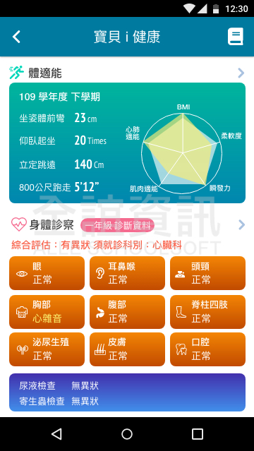

<div class="APP_application_list_class">
  <div class="APP_application_list_title">
    <span class="APP_application_list_title_left">
      <h4>健康照護</h4>  
    </span>
    <span class="APP_application_list_title_right">
      <span class="APP_list_user APP_user_orange">
        學生
      </span>
      <span class="APP_list_user APP_user_green">
        老師
      </span>
    </span>
    <div class="clear"></div>
  </div>

  <div class="APP_application_list_words">
    詳細紀錄學生每學期的身體健康檢查、口腔、視力檢查等，並提供以上三者之保健提醒，另外還可觀看學生各學期的成長示意動畫圖哦！
  </div>

  <div class="APP_application_list_pic">
    <span class="APP_list_pic_margin">
      
    </span>
    <span class="APP_list_pic_margin">
      
    </span>
    <span class="APP_list_pic_margin">
      
    </span>
    <span class="APP_list_pic_margin">
      
    </span>
  </div>
</div>
